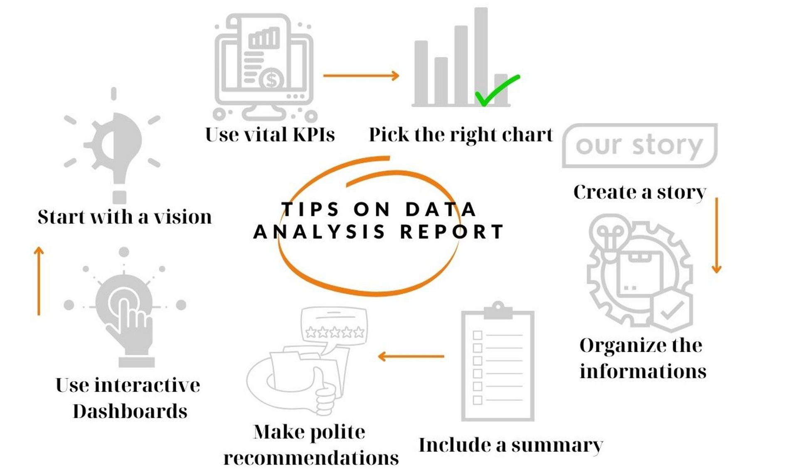

Over the last few years , analytical reporting has become an important part of business intelligence. An Analytical Report is a document that present data using different metrics and visualizations in order to have a better view about business and operational activities and is used to make decisions. But which are the steps to create a report? How can you make a report that stands out?
 If you start writng without having a clear idea of what your data analysis report is going to include, it might get messy and confused. Important insights of your data might got forgotten and the main structure can be disoriented. To avoid this, you should start with a clear view of how you want your report to be. Plan the structure and the contents first, to achieve a good structured report that covers all the topics that you want to point out.
Do not overdue with them. You should use only the relevant KPIs for the department that the report is going to made for. Discuss the purpose of this dashboard in a meeting with your team but if it is for other executives just focus on the most relevant KPIs.
Make sure you use the right charts for your data that visualize your data accurately and in an easy and understandable way.
Your report should tell a story about your performance. There are a lot of questions to answer and you can put all those responses together in a compelling and understandable narrative.
Before you start your report you have to choose how it is going to be organized. The best practices typically involve starting with the more general information and then dive into details if necessary.
A summary at the beginning of a report can help the reader to get familiar with the subjects of the report and even if they do not have time to read the whole report will have a quick idea of the center image of it.
Tip: Even if the summary is usually placed at the beggining of a report, it is best to be written when you have finished writting the whole report.
If the results of the report are not as expected, be careful not to judge the strategy that failed. It is important to give suggestions on how the process can be improved and make helpful tips for the business growth.
The way that you represent your data can make or break a presentation, regardless of how valuable are your insights. Making a great visual report can automatically update your data and display it in an interesting way.
There are many different types of reports. Knowing your goals and which department the analysis is about, would be easy to choose one of them. Examples of different reports that might be useful for your business are:
Marketing Data Analysis Report
Marketing Report analyses marketing metrics to inform future marketing decisions, strategies and performance.
Sales Data Analysis Report
Sales Report analyses trends and patterns on your sales data. They can help you make better decisions about your pricing, product, inventory and other aspects.
Customer Support Data Analysis
Report
Customer Support Analysis uses emails, phone conversations, social media and surveys to create valuable insights about the experience the customer has while buying the product or the serrvice a business provide.
Ecommerce Data Analysis Report
Ecommerce Report uses metrics like sales, customer behavior, and website performance, to provide suggestions to improve marketing strategies, customer experience, and increase overall profitability.
Project Management Data Analysis Report
Project Management Analysis provide information about the performance of the project, including cost, timeline, recourse utilization, quality control and risk management.
Social Media Data Analysis Report
Social Media Analysis is not only metrics about likes, follows, retweets, clicks and impressions. Many social platforms work like web search tools. Therefore keywords or topics can be retrieved from them. There is also, social listening. Social listening is monitoring conversations that are happening in different platforms that is evolving around the business product, brand or other industry-related allowing this way the brand to be involved or even make campaigns about a topic that concerns their customers.
Financial KPI Data Analysis Report
Financial KPI Report iclude measures like profits, revenue, expenses and other financial outcomes and is reviewed usually on weekly, monthly or yearly basis.
SEO Data Analysis Report
SEO (Search Engine Optimization) Report analyses how well your SEO works and make recommendations to improve it.
Help Desk Data Analysis Report
Help desk analytics can give you real-time data on ticket trends, visualize vital agent performance metrics like response times and First Contact Resolution (FCR) ratings.
This site was created with the Nicepage